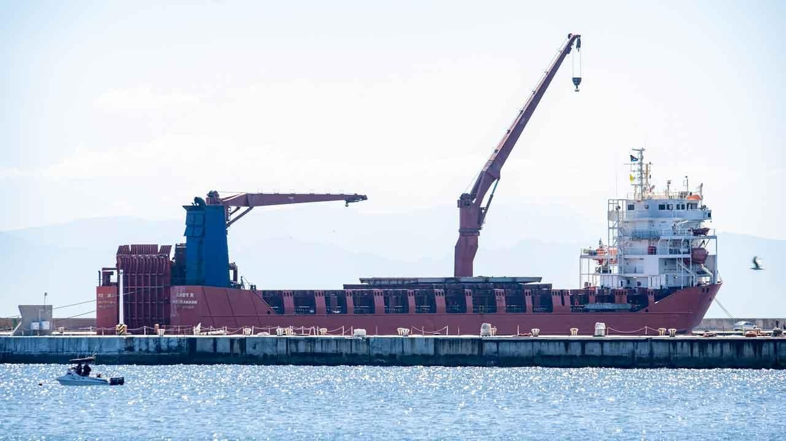

US lawmakers urge Biden to punish South Africa for supporting Russia's invasion of UkraineA bipartisan group of U.S. lawmakers wants the Biden Administration to punish South Africa for what they call its support for Russia's illegal invasion of Ukraine by relocating an important trade meeting to another country, according to a letter published Tuesday in The New York Times. The lawmakers also said that South Africa's "aid" for Russia, including allegedly supplying Moscow with weapons for its war in Ukraine, calls into question its eligibility to receive trade benefits from the U.S. under the African Growth and Opportunity Act. South African Foreign Ministry spokesman Clayson Monyela said Tuesday in a statement that the U.S. lawmakers’ letter had been "noted" but South Africa still "enjoys the support of the U.S. government" for its hosting of the AGOA meeting. South Africa's exports to the U.S. through AGOA were estimated at $3 billion last year. The U.S. is South Africa's second-biggest trade partner behind China. Moving November's AGOA meeting to another country "would send a clear and important message that the United States continues to stand with Ukraine and will not accept our trading partners provision of aid to Russia’s ongoing and brutal invasion," the letter from lawmakers said. It said that despite the South African government's claim that it was neutral in the war in Ukraine, it had "deepened its military relationship with Russia over the past year." The letter was dated June 9 and sent to Secretary of State Antony Blinken, U.S. Trade Representative Katherine Tai and National Security Adviser Jake Sullivan. It was signed by Democratic Sen. Chris Coons, the chairman of the Senate Subcommittee on State, Foreign Operations, and Related Programs; Republican Sen. Jim Risch, the ranking member of the Senate Foreign Relations Committee; Rep. Gregory Meeks, a Democrat and the ranking member of the House Foreign Affairs Committee and Republican Rep. Michael McCaul, chairman of the House Foreign Affairs Committee. AGOA is legislation passed by Congress that allows Sub-Saharan African countries duty-free access to the U.S. market for their exports provided they meet certain conditions. South Africa is one of the biggest beneficiaries. The U.S. considers South Africa an important political and economic partner even though the country — especially its ruling African National Congress party — has historic ties with Russia dating back to the days of the Soviet Union. Because of that, South Africa's government says it has adopted a non-aligned stance on the war in Ukraine. But while the U.S. largely accepts that position, it has viewed some of South Africa's recent actions as not being neutral but actively favoring Russia in the war. The U.S. concerns burst into the public sphere last month when U.S. Ambassador to South Africa Reuben Brigety held a news conference in the South African capital of Pretoria and accused the country of providing arms to Russia in a cargo ship that made a secret visit to South Africa's main naval base in December. South Africa has denied the allegation but is investigating the visit of the Russian-flagged Lady R ship, which is under U.S. sanctions for allegedly transporting weapons for the Russian government. The lawmakers said there was U.S. intelligence that indicated South Africa had "covertly" supplied Russia with weapons on the Lady R. In their letter, they also referred to the visit of a Russian military plane, also under U.S. sanctions, to a South African airbase in April, and South Africa's decision to host Russian and Chinese warships for naval drills in February that coincided with the one-year anniversary of the Russian invasion. "We are seriously concerned that hosting the 2023 AGOA Forum in South Africa would serve as an implicit endorsement of South Africa’s damaging support for Russia’s invasion of Ukraine and possible violation of U.S. sanctions law," said the lawmakers' letter. South Africa was also "working to facilitate the participation of Russian President Vladimir Putin" at a summit of emerging economies in Johannesburg in August, the U.S. lawmakers said, despite Putin being indicted by the International Criminal Court for war crimes in Ukraine. A senior official in South Africa's ruling party said recently it would "welcome" a visit by Putin. The Biden Administration has not spoken of any sanctions or punishment against South Africa, but AGOA has been mentioned by analysts in South Africa as a means by which the country might be punished. Any restriction of South Africa's trade with the U.S. would be deeply damaging to Africa's most developed country, which is wrestling with a stagnant economy, huge unemployment and an energy crisis. South Africa’s largest opposition party said it viewed the lawmakers' letter as an indication that Washington's patience with South Africa over its Russia relationship was "fast diminishing." On Monday, the spokesman for South African President Cyril Ramaphosa said any talk of formal sanctions for South Africa over Russia was "reckless" and "purely alarmist." |
 |